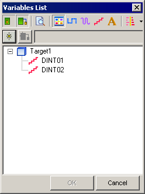
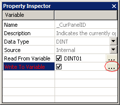

|
|
|
|
|
|
|
|
In the Variable Editor, click the System Variable icon  to display the system variables.
to display the system variables.
Select _CurPanelID from the list of system variables.
In the _CurPanelID properties, select the Read From Variable checkbox and click the ellipsis button.
In the variable list specify the integer variable that changes panel. Click OK. The Read From variable should be set to a device address which you can use to change the current panel.

In the _CurPanelID properties, select the Write to Variable checkbox and click the ellipsis button.

In the variable list specify the integer variable that stores the current panel. Click OK. The Write To variable should be set to a device address which you can use to find out the current panel displayed on the target machine.

You can assign different external variables to the Read From and Write To fields.
If a panel number that does not exist is written to the Read From variable, the panel will not change.
The panel changes only if there is a change in the Read From variable. If the same value is written, a change panel operation will not occur.
If you write to the Write To value from the equipment, the value in the Write To field will be overwritten.
You cannot assign system variables to the Read From and Write To fields. If you try to assign system variables, an error message displays.